Nosotros
Nuestra razón de ser
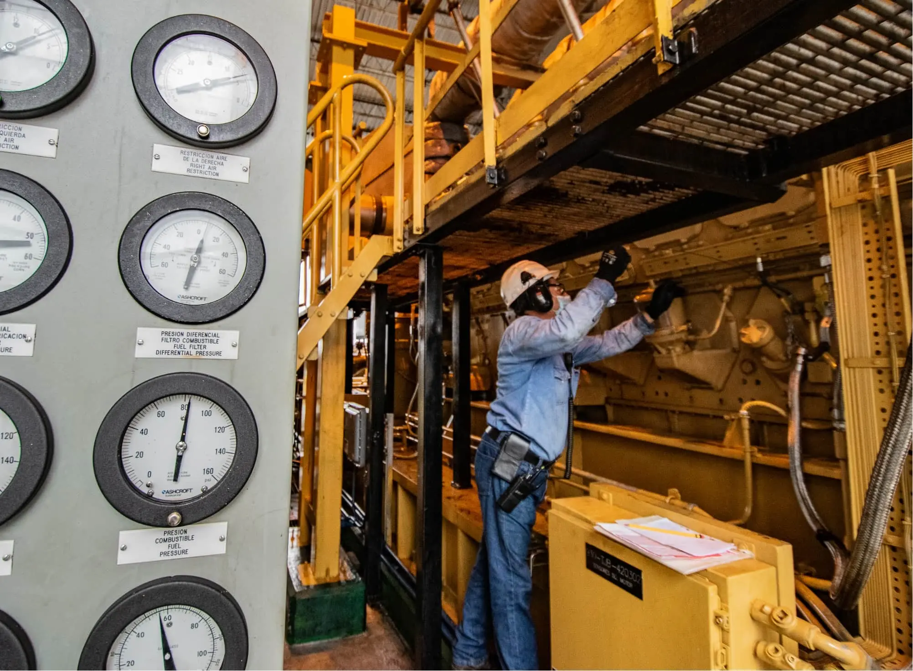
Necesitamos ser eficientes y flexibles en la operación. Una operación segura y confiable, protegiendo a las personas y al medioambiente, especialmente el recurso hídrico, el uso de energías renovables, la gestión de residuos y la menor emisión de carbono.
Para esto es imprescindible la diversificación de las fuentes de ingreso. El gas natural y la integración inorgánica de infraestructura de transporte de hidrocarburos serán relevantes en la operación. Para la defensa de ecosistemas y biodiversidad, nuestra aliada estratégica es la mujer, líder del desarrollo rural y protectora del medioambiente. Tejiendo una red productiva que genere desarrollo territorial fundamentado en la defensa ambiental.
5.000
Mujeres

harán parte de la red para consolidar la protección del medioambiente
Duplicar la participación
de mujeres
en roldes de liderazgo respecto al
2020
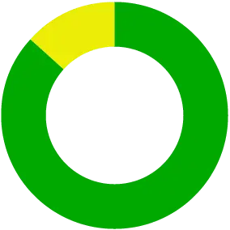
78% Mujeres
12% Hombres
Promovemos y valoramos la diversidad, la inclusión y el balance de vida buscando equidad de género en nuestro equipo de liderazgo y una oferta de valor integral a nuestros empleados. Avanzamos en estándares internacionales de ética y promovemos nuestros criterios ambientales, sociales y de gobernanza (ESG) en nuestra cadena de valor.
Para llevar a buen puerto los propósitos de sostenibilidad y de valor, la adaptación organizacional nos sintoniza con el futuro. Para ello, contamos con talento competente, apropiación de nuestra cultura, un modelo organizacional que se ajuste a las necesidades estratégicas del negocio y que garantice el control, el cumplimiento y el logro de los objetivos.

En 2030 Ocensa se consolidará como una de las principales compañías de midstream en Latinoamérica, maximizando su eficiencia, creando soluciones integrales para sus clientes, mitigando el cambio climático y generando valor con sus grupos de interés.

Nosotros
Historia
Con 27 años de historia y considerada la primera gran obra de infraestructura del país, Ocensa sigue siendo el más importante y moderno transportador de petróleo en Colombia.
Vocación energética
1983La vocación energética del país se impulsó en 1983 tras el descubrimiento del campo Caño Limón. Tres años después, Colombia era exportador de crudo y el petróleo pasó a ser la principal fuente de divisas. En 1991 la British Petroleum descubrió el campo de Cusiana y un año después el de Cupiagua, ambos en Casanare. Las reservas del país aumentaron a unos 2.000 millones de barriles.
Modernización del transporte
1994Con la producción al alza y el aumento mundial en la demanda de crudo, era estratégico mejorar y modernizar el transporte de petróleo. El 14 de diciembre de 1994 nace el Oleoducto Central S.A. (Ocensa) como una empresa de economía mixta (capitales públicos y privados) que se creó con la participación de Ecopetrol, Triton Colombia Inc, BP Colombia Pipeline Ltda., Total Pipelien Colombia S.A, IPL Enterprises Inc y TCPL Ltda. A partir de este momento el reto fue construir un oleoducto que transportara el crudo desde el Casanare hasta el puerto de Coveñas, en el Golfo de Morrosquillo, Sucre.
15
9
El compromiso
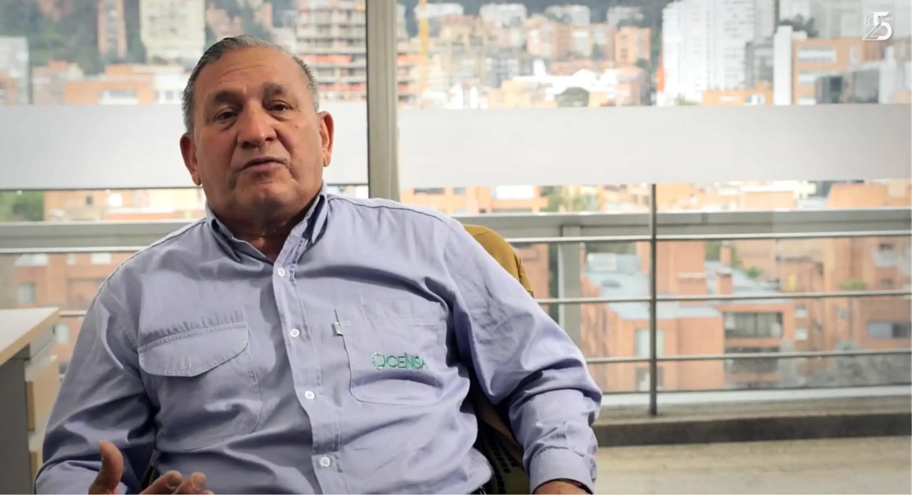“Durante la obra nos tocó dormir en carpas y hacer campamentos móviles cada 5 kilómetros”
Tito Cárdenas, profesional inspector civil.
15
9
La obra de 836 km
1998El reto no era fácil. La cambiante topografía del trazado, la compleja entrada con maquinaria pesada a zonas de difícil acceso, por nombrar solo dos aspectos, convirtieron la misión, según expertos, como la primera gran obra de infraestructura del país. Tres años le tomó a Ocensa desarrollar un oleoducto subterráneo de 836 kilómetros que pasa por 6 departamentos, 45 municipios y 366 veredas. Simplificando un poco: conectó por medio de un tubo los Llanos con el Caribe para terminar con un oleoducto submarino de 12 kilómetros. Unas semanas después de finalizada la obra (28 de febrero de 1998) se iniciaron las operaciones.
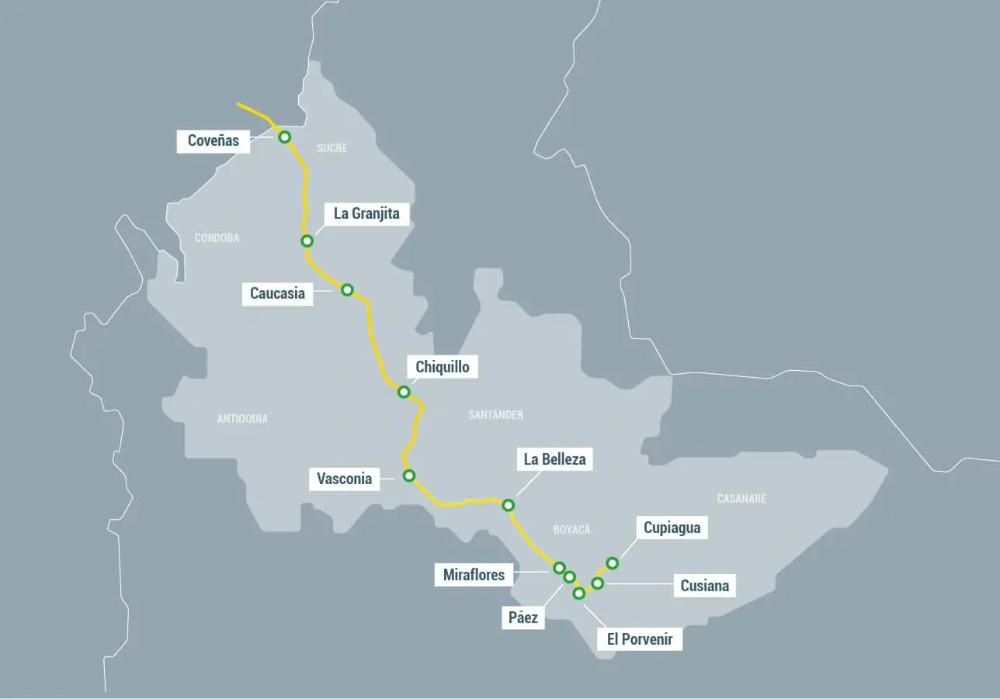
15
9
La magnitud del trazado
15
9
Cuidadosos, responsables y eficientes
2002Entrado el nuevo siglo, el planeta enfrenta grandes desafíos que exigieron a la compañía ser más cuidadosa, responsable y eficiente. Tras la finalización de la obra, durante cinco años se trabajó en la recuperación forestal del trazado. En el 2002 se aprobaron las políticas de salud ocupacional, seguridad industrial, medio ambiente y derechos humanos.
15
9
Llegan los crudos pesados
2004En 2004, ante el incremento del precio del petróleo y la disminución de crudos livianos en el país, la extracción de crudos pesados se convirtió en una oportunidad que prácticamente invirtió la balanza de producción respecto a los crudos livianos. Esto, implicó una adaptación de infraestructura importante para estar acordes con la gran cantidad de pozos perforados en 2005.
15
9
Altos de Porvenir
2008Ecopetrol abre la planta Altos de Porvenir y la conecta al sistema Ocensa.
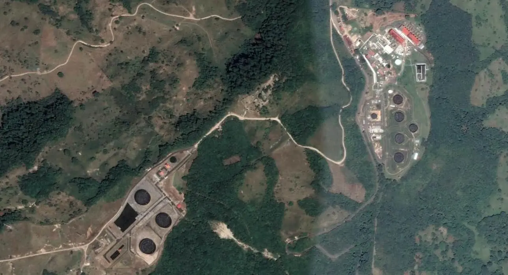
15
9
El giro
“Se giró la torta: antes transportábamos un 90% de crudos livianos; hoy, más del 90% son crudos pesados”
Ignacio Gómez, gerente de proyectos.
15
9
Nace Cenit
2010Con la separación de los negocios de producción y de transporte de crudo, promovido por el Gobierno Nacional en 2010, nació Cenit, filial de Ecopetrol y principal accionista de Ocensa. A partir de este momento comienza para la compañía una nueva etapa con alto potencial de crecimiento.
15
9
Proyecto Delta 35
2013Con el proyecto se amplió la capacidad de los segmentos I, II y III para el transporte de 35.000 barriles adicionales.
Caen los precios del petróleo
2014En 2012, Ocensa transportaba el 58% del crudo producido en el país, en 2013 fue del 70%. En pleno proceso de crecimiento se presentó, entre 2014 y 2015, la caída en los precios del petróleo, pasando de 100 dólares por barril a casi 30 dólares. Muchas empresas se fueron, mientras tanto la compañía continuó con el proyecto de ampliar su capacidad de transporte a 560 mil barriles diarios; asimismo, comenzó la repotenciación de toda la infraestructura de bombeo y agregó tres nuevas estaciones al oleoducto.
El precio del petróleo de EE.UU. cotiza en negativo
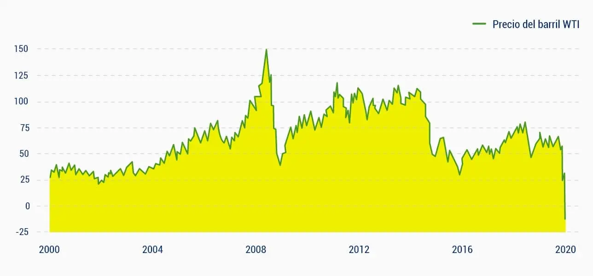
Fuente: Bloomberg
15
9
Proyecto Potencia 135
Aumenta la potencia de bombeo del sistema para incrementar el volumen de petróleo transportado entre Cusiana y Coveñas en 135.000 barriles por día mediante la construcción de tres estaciones: Paéz, La Granjita y Chiquillo.
Crudos extrapesados
2016Con la experiencia acumulada en el transporte de crudos livianos y pesados, en 2016 se inicia exitosamente el proyecto 600 Centistokes con el propósito de transportar 126.500 barriles de crudo extrapesado.
15
9
Adcus y consumo energético
2018Adcus fue el proyecto de adecuaciones del descargadero de Cusiana que representa para la compañía un importante punto de entrada al oleoducto.
Desarrollamos un sistema que, en tiempo real, hace seguimiento al consumo energético de nuestra operación. (Basado en ISO 50001).
15
9
Record de bombeo mensual
2019Octubre 2019
Se bombearon 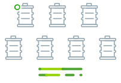 704.875 Barriles por díaCargue del Búque
Número 3.000 Por la TLU2Hoy
2021Desde su creación, Ocensa continúa modernizando su infraestructura y tecnología. En un mercado energético que está cambiando y con clientes que demandan necesidades puntuales, buscamos fortalecer el modelo de negocio siendo eficientes, diversificando la operación y maximizando el beneficio de la cadena de valor, obteniendo una utilidad operacional sostenida y generando impacto positivo a la sociedad y al medioambiente.
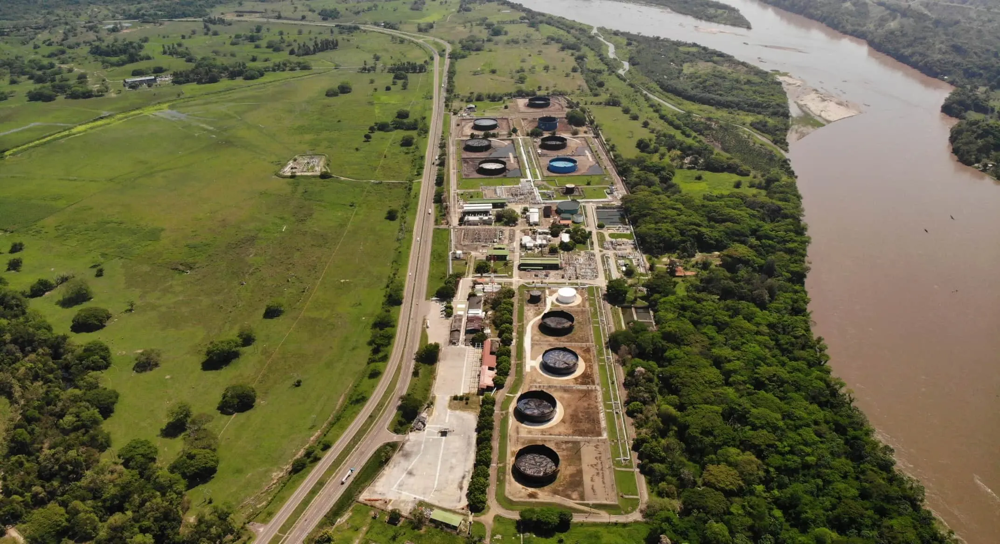
15
9

Nosotros
Cultura
15
9
Favoritos
No hay un solo aspecto del universo, del planeta y de nuestro entorno que se haya quedado estático a largo del tiempo. El lugar que habitamos se mueve desde lo físico, con sus fenómenos; desde lo biológico, en lo evolutivo; y desde lo social, con sus culturas.
Lograr que los diferentes aspectos de la vida se muevan y se transformen implica tener un propósito. Para nosotros, ese propósito toma sentido si partimos del valor de las personas y contribuimos con su desarrollo; siendo responsables con nuestros clientes y accionistas, fortaleciendo las comunidades que se encuentran en nuestra área de influencia, e incentivando el talento de las personas con quienes trabajamos aportando un ambiente de trabajo óptimo.
Por la actividad que desarrollamos, convivimos en contextos cambiantes de mercado, de medio ambiente y sociales, por nombrar algunos, que involucran la necesidad de ser dinámicos, de reinventarnos para mejorar. Las exigencias que plantea el presente y las perspectivas a futuro, muestran que con nuestra creatividad e inteligencia podremos dar solución a los retos que tengamos en frente.

En muchas ocasiones necesitamos de algo o alguien que nos impulse para afrontar los retos. Aquí, la fuerza transformadora de nuestra cultura se enfoca en tres líneas de liderazgo: integral, ejemplar e inspirador.
Con un liderazgo integral podemos asumir responsabilidades técnicas de los procesos en que estamos involucrados y asimismo aproximarnos mejor en la relación con el equipo de trabajo, el entorno y, por qué no, con nosotros mismos.
El ejemplo es sin duda un aspecto imprescindible para liderar. La transparencia con la que se actúa genera un referente de credibilidad y confianza que ayuda a moldear la cultura de la organización.
Es muy posible que, si desarrollamos un liderazgo desde lo integral y lo ejemplar, estemos en camino de ser líderes inspiradores. Donde impulsemos a otros a dar lo mejor de sí, teniendo clara su contribución y la del equipo en la compañía, sin olvidar el reconocimiento que cada quien merece por el buen trabajo.
Ser un líder no está relacionado con algún cargo de la compañía. El líder marca la diferencia e inspira con su comportamiento y actitud, logrando que las cosas sucedan desde su rol laboral.
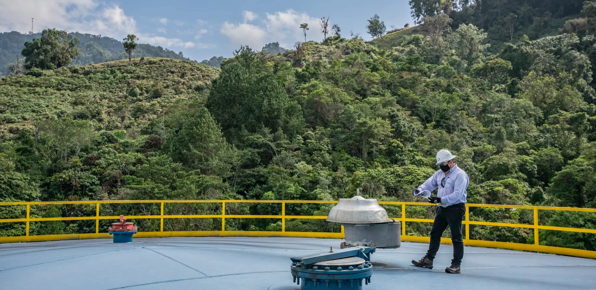
El desarrollo de una cultura organizacional necesita de unos principios que la sustenten y que sean la guía de nuestra fuerza de trabajo.
Primero la vida
Nos cuidamos y cuidamos el planeta
El colaborador de Ocensa aplica este principio cuando:- Se cuida y cuida a los demás.
- Actúa con rigor y disciplina frente al sistema de gestión de HSE.
- Cuida el medio ambiente y el entorno pensando en las generaciones futuras.
- Fomenta el bienestar y el autocuidado de los integrantes del equipo que lidera.
- Lidera a su equipo dando ejemplo en el cumplimiento de la normativa HSE.
- Lidera a su equipo priorizando la vida y el respeto de las personas por encima de los resultados.

Éticos siempre
Nos cuidamos y cuidamos el planeta
El colaborador de Ocensa aplica este principio cuando:- Es integro en todas sus actuaciones y cumple los lineamientos del código de ética. Ver más →
- Asume con responsabilidad sus actos.
- Es respetuoso y tiene un buen trato con todas las personas.
- Lidera con el ejemplo y promueve en su equipo el cumplimiento del código de ética. Ver más →
- Moviliza al equipo que lidera a actuar en coherencia con los principios culturales.
- Lidera el conocimiento y vivencia del código de ética, y rechaza y reporta las conductas que violan los principios éticos.
Apasionados por la excelencia
Producimos resultados excepcionales y sostenibles
El colaborador de Ocensa aplica este principio cuando:- Planea y hace seguimiento de forma rigurosa.
- Honra los compromisos.
- Supera las expectativas y crea valor en todo lo que hace.
- Comprende el entorno y la estrategia de negocio, desplegando metas desafiantes para el equipo que lidera.
- Acompaña a su equipo y realiza seguimiento al cumplimiento de los objetivos, buscando superar las expectativas.
- Lidera la toma decisiones y solución de problemas de forma responsable y ágil.
Escuchamos con respeto y hablamos con claridad
Lideramos desde la diversidad y la inclusión
El colaborador de Ocensa aplica este principio cuando:- Favorece la igualdad de expresión y oportunidades sin importar las diferencias.
- Se atreve a expresar sus ideas y a discrepar.
- Crea un ambiente sin miedos, sin agresiones y sin discriminación.
- Lidera a su equipo con humildad, respeto y un auténtico sentido humano.
- Da retroalimentación oportuna al equipo que lidera y promueve su desarrollo para ayudarle a mejorar el desempeño.
- Lidera creando un ambiente de confianza libre de miedos, agresiones y discriminaciones.
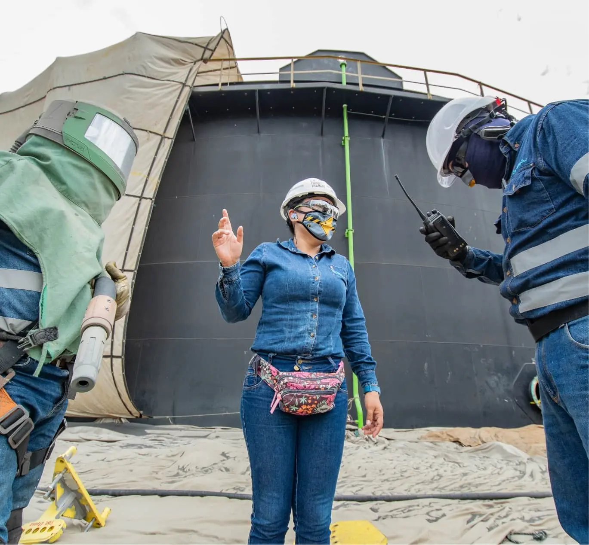
Hacemos posible lo imposible
Nos anticipamos e innovamos con tecnología
El colaborador de Ocensa aplica este principio cuando:- Aprende de los aciertos y errores.
- Actúa con agilidad.
- Experimenta teniendo en cuenta los riesgos y busca mejores formas de hacer las cosas.
- Ejerce su liderazgo con resiliencia y optimismo, encontrando oportunidades en la adversidad.
- Ejerce su liderazgo anticipándose en la búsqueda de soluciones innovadoras y ágiles.
- Promueve que el equipo que lidera experimente nuevas formas de hacer las cosas y aprenda de los éxitos y fracasos.
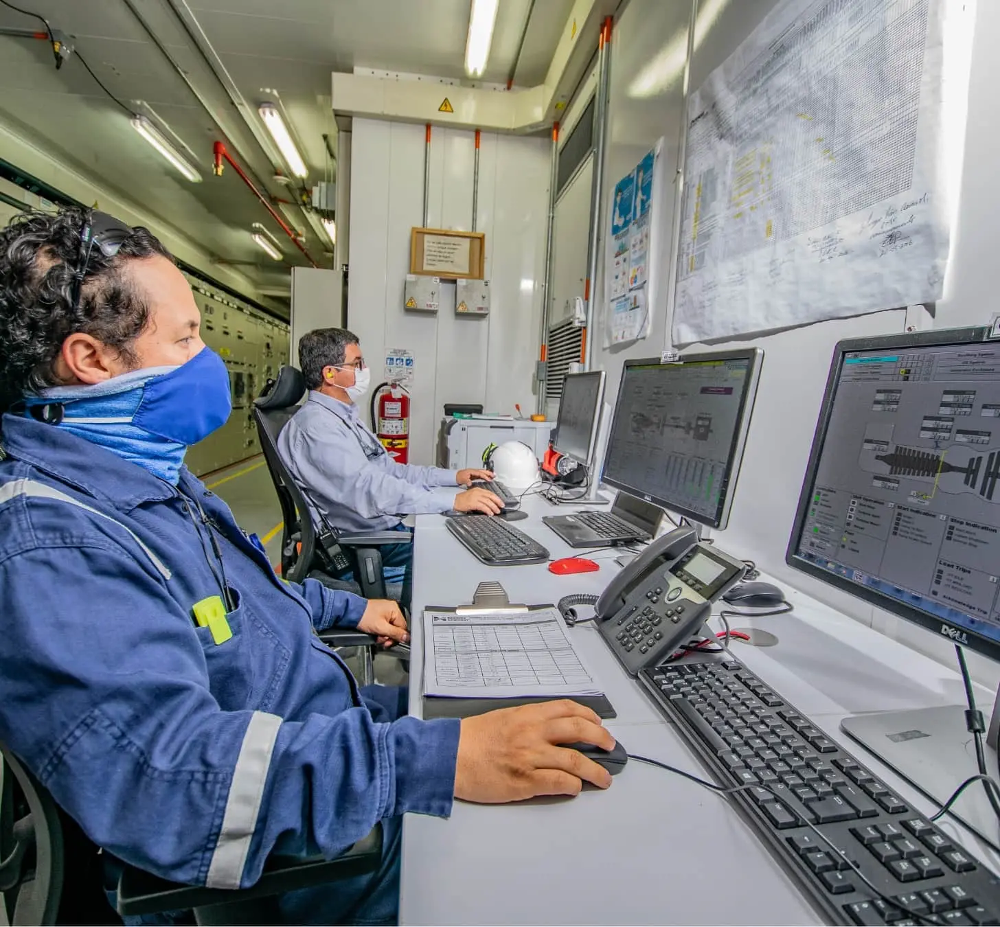
Somos un solo equipo
Construimos nuestra grandeza desde la colaboración
El colaborador de Ocensa aplica este principio cuando:- Rompe silos y se conecta con otros equipos.
- Felicita, reconoce y agradece a quienes se destacan en la forma de hacer las cosas.
- Da y recibe retroalimentación con humildad.
- Lidera al equipo conectándolo con el resto de la organización en búsqueda de resultados conjuntos.
- Reconoce los logros de su equipo y felicita a sus colaboradores cuando se destacan por su forma de actuar.
- Fomenta en su equipo el uso de herramientas, tecnologías y esquemas en pro del trabajo colaborativo.
La nueva cultura de Ocensa y su transformación, parten del compromiso individual que cada persona tiene con sigo mismo y con su cargo. La diversificación de la compañía es un norte claro y este modelo de cultura y liderazgo se convierte en la guía para alcanzar ese propósito.
Seremos: mejores personas con nosotros mismos y nuestras familias, mejores profesionales para Ocensa y mejores ciudadanos para nuestro país.